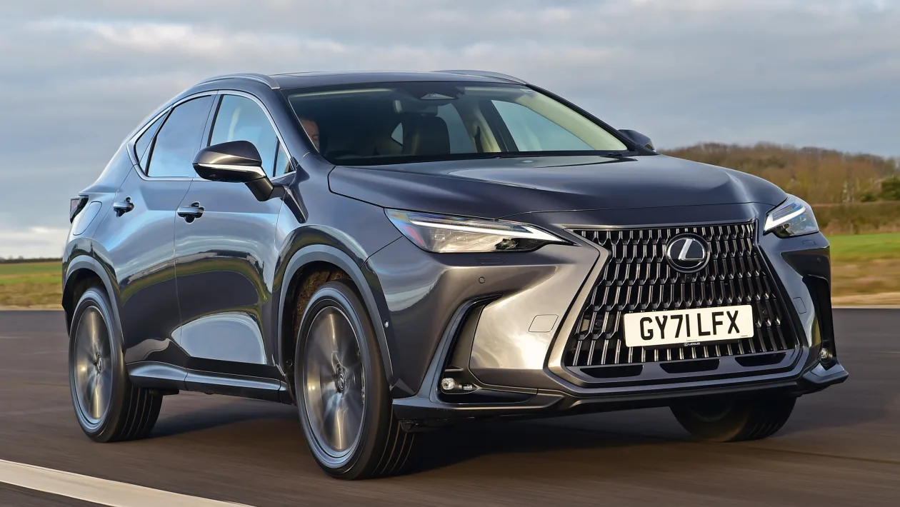
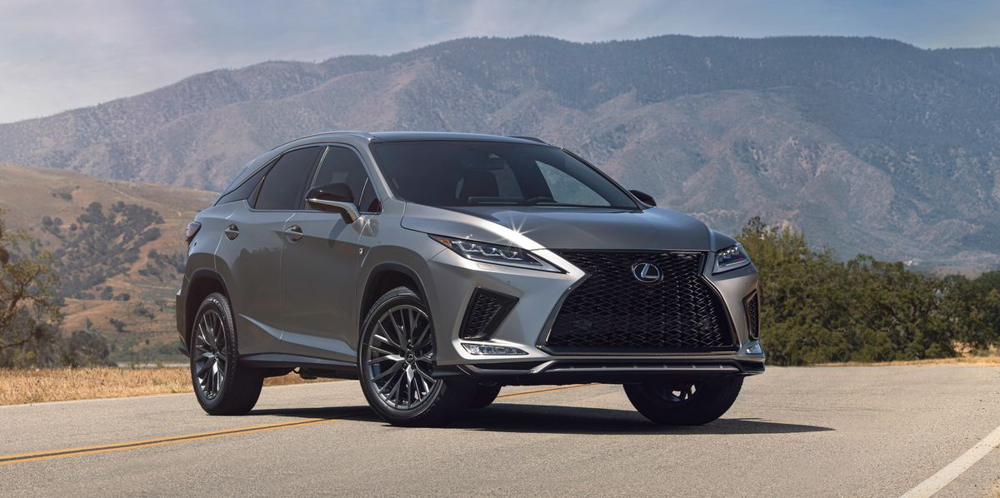
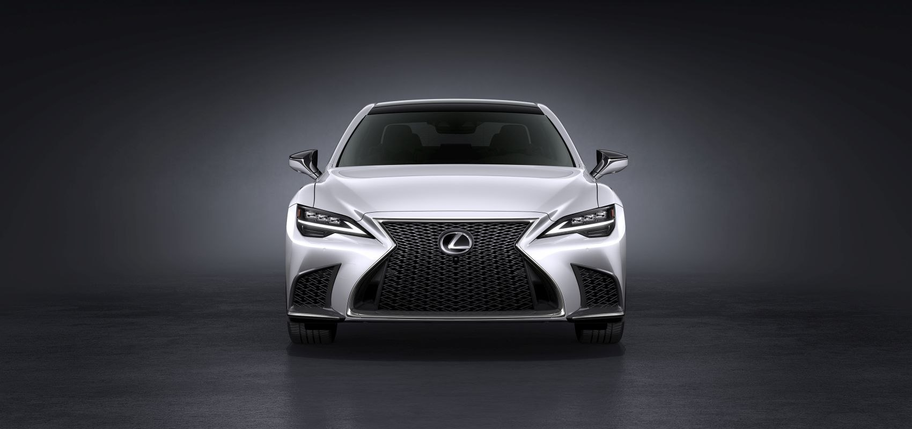
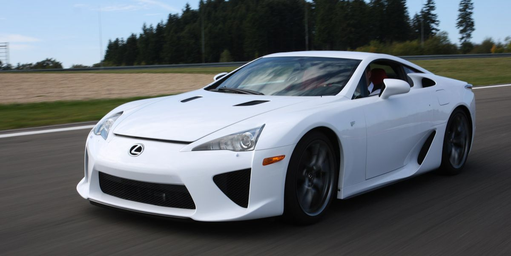

Luxury vehicles company
Lexus is the luxury vehicle division of the Japanese automaker Toyota. The Lexus brand is marked in more than 90 countries and territories worldwide and is Japan's largest-selling make of premium cars. It has ranked among the 10 largest Japanese global brands in market value. Lexus is headquartered in Nagoya, Japan. Operational centers are located in Brussels, Belgium, and Plano, Texas, United States.
Lexus NX
The Luxus NX is a compact luxury crissiver SUV sold by Lexus, a luxury division of Toyota, Introduced in late 2014, it is positioned between subcompact UX and the mid-size RX. The NX was proven to be well-received, as it was a sales success. It was the best-selling Lexus model in Europe, and the best-selling luxury car in Russia. According to Lexus, the name "NX" stands for "Nimble Crossover".
Lexus RX
The Luxus RX is a luxury crossover SUV sold since 1998 by Lexus, a luxury devision of Toyota. Originally released in its home market of Jpana in late 1997 as the Toyota Harrier, export sales began in March 1998 as the Lexus RX. Considered as the first luxury crossover SUV, four generations of the RX have been produced to date, the first being compact in size, and the latter three classified as mid-size.
Lexus LS
The Luxus LS is a full-size luxury sedan (F-segment in Europe) serving as the flagship model of Lexus, the luxury devision of Toyota. For the first four generations, all LS models featured V8 engines and were predominantly rear-wheel-drive. In the fourth generation, Lexus offered all-wheel-drive, hybrid, and long-wheelbase variants. The fifth generation changed to using a V6 engine with no V8 option, and only one length was offered.
Lexus LFA
The Lexus LFA is a two-seat sports car manufactured by Lexus, the luxury car division of Toyota. It is the second model in the F marque line of performance vehicles from Lexus, following the IS F. Three concept versions were unveiled, each debuting at the North American International Auto Show with the LF-A designation as part of the LF Series concept line.